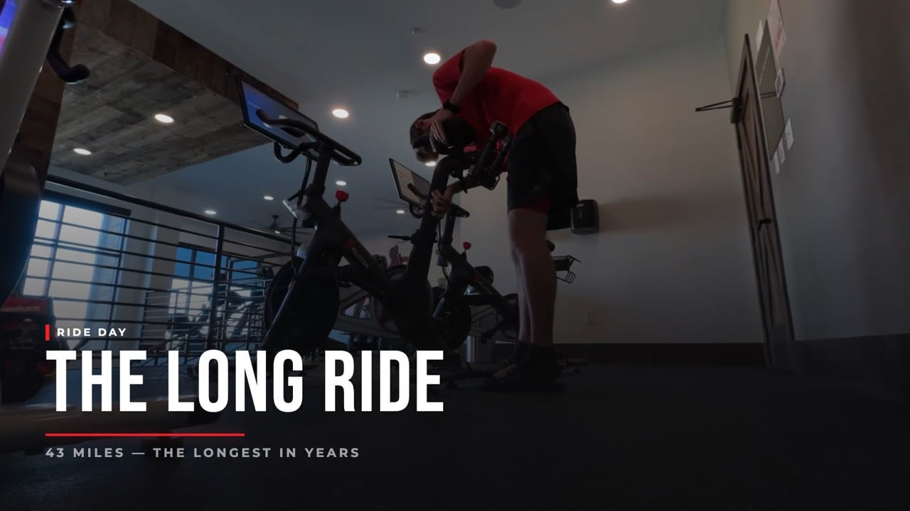

Your story.
Cut and ready.
Slice of Life is the AI vlog editor for Mac. Drop in your footage — it finds your best moments, cuts in b-roll, and hands you a finished vlog, ready to upload.

Cycling & paddleboarding
32 clips · GoPro + iPhone View case studyMore on the way
Real days, real footageMore slices soon
Cut with Slice of LifeHow it works
Film. Drop. Post.
That's the whole thing.
Drop your footage
Drag in today's clips — your talking-to-camera a-roll and any b-roll you shot. No sorting, no renaming, no prep.
Vlog gets built
Your best talking moments become the spine. B-roll cuts in automatically. No timeline. No editor.
Post it
A finished MP4 lands in your folder in minutes. A Premiere XML exports automatically alongside.
What makes this different
The stuff other apps
won't tell you.
What it does
Every part of the vlog edit,
handled automatically.
B-roll cut in automatically
Slice cuts in b-roll that matches what you're saying — like you spent an hour editing.
Your best takes, found automatically
Slice finds your strongest talking-to-camera moments and builds your a-roll spine automatically.
Your call. Your pace.
Tight, Balanced, or Relaxed — choose how fast you want the cuts. Tight fits more footage in with quick cuts; Relaxed lets each shot breathe. Re-edit from the results screen without re-analyzing.
Take it to Premiere
Every vlog exports an XML timeline compatible with Premiere Pro — a-roll on V1, b-roll on V2, all source clips referenced. Open it, refine it, done.
Never wonder what to film
The biggest reason vloggers go dark is not knowing what to say. Every morning, Slice generates a personalized prompt based on your history — so you pick up the camera instead of talking yourself out of it.
"You've been filming a lot at home lately. What's one thing about your space you've never actually described out loud?"
Slow rack focus from foreground clutter to whatever's in the background.
Pricing
Pick a plan. Keep vlogging.
For anyone who vlogs regularly.
- 60 editing credits / month
- 1080p export
- Vlog mode — talking-to-camera edits
- Captions, 3 fonts
- Up to 2 auto-generated Shorts / render
- Premiere Pro XML export
For creators who want the full studio.
Try free for 7 days, card required
- 150 editing credits / month
- 4K export
- All 3 edit modes — Vlog, Voiceover, B-roll
- Captions, all 8 fonts
- Unlimited auto-generated Shorts
- YouTube kit — titles, description, chapters
- Premiere Pro XML export
Annual billing available on both plans — two months free. Cancel anytime; you keep access through the end of your billing period. Need more credits mid-cycle? Top-up packs are available from $15.
You filmed today.
Post today.
Mac · Apple Silicon · macOS 13+
v0.2.0 · macOS 13+ · 2026
Cancel anytime during your trial · No charge until day 7
FAQ